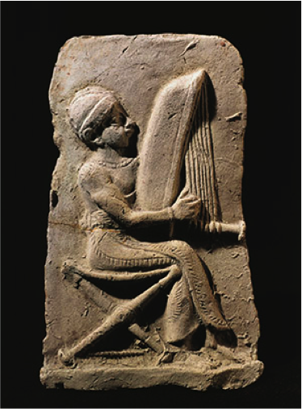
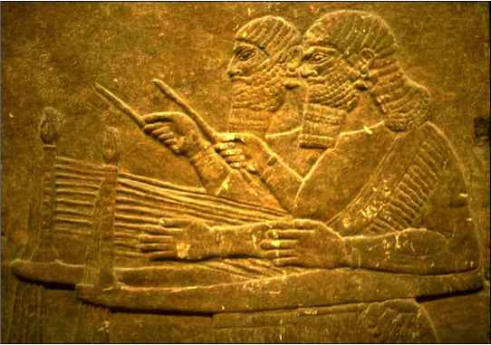

Putting Music in Context

Second millennium BCE terra-cotta relief of a Babylonian harpist. (DEA/G. Dagli Orti)
Music seems to have pervaded every aspect of life in Ancient Mesopotamia, as is attested in part by the long catalogues of songs discovered time and time again by archaeologists. These compositions come in a variety of genres: songs of praise and hymn, prayer songs used in cultic rituals and magical invocations, songs of work, songs of battle and history, narrative and epic songs, songs of death and mourning, lullabies. Each song’s utility was apparently an important consideration at least for those who catalogued them; one song list, from the Middle Assyrian period, divides its titles into more than thirty subcategories.
Performers and Performances
Though the songs themselves were subject to a complex schemata of categorization, the musicians themselves were less likely to be specialized in their fields of artistic focus. A single musician is likely to have known songs for a variety of situations and traditions; she was also unlikely to be called upon simply as a sacred or secular artist, performing works from a variety of schools. Indeed, the very role of a musician was less narrow than we might be led to expect; the line between musician and dancer seems to have been blurred into a more all-encompassing role as performer. (Kilmer) (The aforementioned wildly “rocking” lutenists are even shown in some portrayals to be engaging in sexual activities whilst performing.) Old Babylonian terra cotta works of art also provide insights into the types of scenes performers would likely have practiced their craft—for example, taverns and social celebrations were as likely to be settings for musical activity as palaces and temples. (Kilmer)
A particularly common setting for musical accompaniment was, unsurprisingly, the feast. As in our modern parties, ancient bands were hired to perform tunes, and were expected to know appropriate songs for an occasion. Typically, such musically accompanied feasts included dancers, and, according to some texts, even trained beasts who would perform in the orchestra, though the accuracy of such claims, or whether they are indeed just tall tales, is forever lost to history. (A particularly creative text is written from the perspective of a “music hall monkey” writing home to his mother to complain of mistreatment at the hands of his human conductors.) (Kilmer)
Spiritual and Secular Tunes
There is, however, one clear distinction between spiritual and secular uses of musical traditions, even if any given musician may have known (and been expected to be able to perform) songs in each tradition. As explained by Professor Richard Dumbrill in his recent lecture at Harvard on the music of the ancient Near East, differences in instrumentation underscored the divide between secular songs, which, as noted, could feature stringed and wind instruments, and religious songs, which would have featured drums and percussion to go along with vocal accompaniment. (Dumbrill) Without getting too speculative, it seems that this primary difference between the two traditions—instrumental melodies for parties and secular celebrations, vocal chanting and group rhythms for spiritual and cultic activities—underscores differences in the fundamental nature of each. At a party or social gathering, it’s fun to watch and marvel at a virtuoso musician perform his or her top-notch abilities, and the associated types of musical instruments are better suited for revelry and showing off impressive skills. A spiritual event, which aims in part to unite a community, is better suited to the rhythmic patterns of drums and percussion, the simplest of which do not require particularly well-honed skill sets.
Lyres, Harps, and Flutes
Considering their relative distance from us in a remote-seeming past, ancient Mesopotamians utilized a surprisingly familiar and even modern array of musical instruments. Surviving sources (including smaller depictions upon seals, sculptures, and pottery, as well as larger reliefs and decorative mosaics or paintings) demonstrate the sheer variety of musical instruments being used; it seems that practically since humanity was born, we’ve been striking, plucking, and blowing a variety of drums, strings, and horns, not to mention howling and yodeling with only the help of our own vocal cords.

Bas-relief of Mesopotamian lyrists, ca. 700 BCE (Levy)
A particular favorite of ancient Mesopotamian musicians was the family of instrument which includes the harp and the lyre. (Harps, smaller than lyres, could be played sitting down or standing up, though judging by depictions in ancient artwork, size varied considerably for each type, from handheld models to massive contraptions meant to be played by two musicians simultaneously. Scenes depicting squadrons of marching harpists are not uncommon, further suggesting an ethos of teamwork in the performance of these instruments.) Indeed, the oldest surviving musical instruments are these types of stringed instrument. Amazingly, in the late 1920s, British archaeologist Sir Leonard Woolley recovered three lyres and a harp from the royal burial site in the ancient city of Ur. Two-stringed lutes were also extant, with illustrations typically depicting nude lutenists performing dynamically, often with unique “moves” to complement their vociferous playing. (Something of the hard-rocking and partially-clothed guitarist, it seems, lived centuries before The Rolling Stones ever plugged in and stripped down.)
Wind instruments, and in particular flutes, were another key element in Mesopotamian musical culture. (Though “wind instrument” is a more contemporary term, here we use it to differentiate the instruments which are played by the controlled blowing of air, not dissimilarly from their modern-day counterparts.) As with the stringed instruments, size and design varied substantially, as did the source material for the instrument (some were made from bone, some from wood, and others from reed or metal). It is unclear how these instruments were pitched, and according to what scale—for example, whether these instruments were tuned to the same scales utilized by the harpists is unknown, though it can be assumed that the instruments’ tonalities weren’t totally at odds with one another given that they are portrayed as being used in tandem with one another in ancient artwork (which, as we will see, is one of the most useful windows we have into the Mesopotamian region’s musical past).
How Much Theory?
Much academic debate continues to surround the depiction of highly advanced scalar and modal constructions in cuneiform texts; some, such as professor Anne Draffkorn Kilmer, suggest that this demonstrates a perhaps surprisingly subtle grasp of “modern” musical theory on the part of ancient musicians. (Kilmer) Others see these documents as little more than evidence of the musings of a scholarly class of mathematicians—purely theoretical cogitations which bore little influence on the wide-spread musicians themselves, who would have developed a multitude of colloquial styles and subgenres. (Michalowski) This more closely adheres to the developmental patterns of various genres of folk or colloquial music seen in various societies for millennia afterward; for example, the development of American blues music in the early 20th century gave rise to a variety of idioms, grouped by scholars into genre names (“Delta blues,” “Chicago blues,” et. al.), while in reality, especially before the advent of a standardizing factor like radio or widespread accessibility of recordings in this genre, self-taught musicians in different local communities likely each gave their own inflections and even utilized their own tunings, irrespective of theoretical considerations.
Conclusion
While there’s a lot we can infer about music in the ancient Near East (the societal roles of songs and musicians, the instruments utilized, and the rich variety in genre and setting), much remains to be understood—including, tantalizingly, what the music actually sounded like. Although we can reconstruct instruments and draw some anthropological conclusions from archaeological evidence, and even muse over the evidence left behind by the ancient mathematicians who delved into abstract realms of theory, the actual scales and sounds created by musicians have slipped beyond our grasp. It’s both slightly maddening and a little poetic to think that while so much has remained, both in terms of physical evidence like recovered instruments, and cultural links, such as the bacchanalian scenes familiar to concertgoers then and now, the actual sound of the music is something that we can only guess at.
Works Consulted
DEA/G. Dagli Orti. Terracotta Relief Depicting a Harp Player. Babylonian Civilization, 2nd Millennium BC. Digital image. Getty Images. Getty Images, 2014. Web. 20 Nov. 2015.
Dumbrill, Richard, Piotr Michalowski, and Irving Finkel. Ancient Mesopotamian Music. Harvard University, Cambridge, MA. 14 Oct. 2015.
Goss, Clint. "Flutes of Gilgamesh and Ancient Mesopotamia". Flutopedia, 2012. Web. 18 Oct. 2015.
Kilmer, Anne Draffkorn. "Music and Dance in Ancient Western Asia." N.p., n.d. Web. 18 Oct. 2015.
Levy, Michael. Bas Relief of musicians in the ruins of the Palace of Nineveh, c.700 BCE. Digital image. The Oldest Written Melody in History. Ancient Lyre, 2015. Web. 20 Nov. 2015.
Michalowski, Piotr. "Traveler's Tales: Observations on Musical Mobility in Mesopotamia and Beyond." ICONEA Conference. ICONEA, 2008. Web. 18 Oct. 2015.